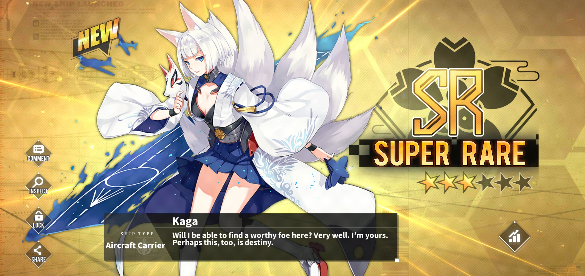

Kaga

|
Kaga in Azur Lane is one of the antagonists in the story mode of the game,
part of the 1st Carrier Division of Sakura Empire (representation of Imperial Japan in the game). She is the counterpart
of the IJN Kaga aircraft carrier. With her sister Akagi, she participated in many Pacific ocean battles during the 1930s
years, was one of the attackers of Pearl Harbour, and finally was sunk during the battle of Midway. She was first intended
to be a battleship (picture 16 in Mudae) before becoming an aircraft carrier. As a playable character, she is droppable at
the boss node of chapter 3-4 with her sister Akagi and is a super rare ship. She can't be constructed. Unlike her sister,
she is calmer, has a cold behavior and estimates only the strongest ones should resist on the battlefield. |